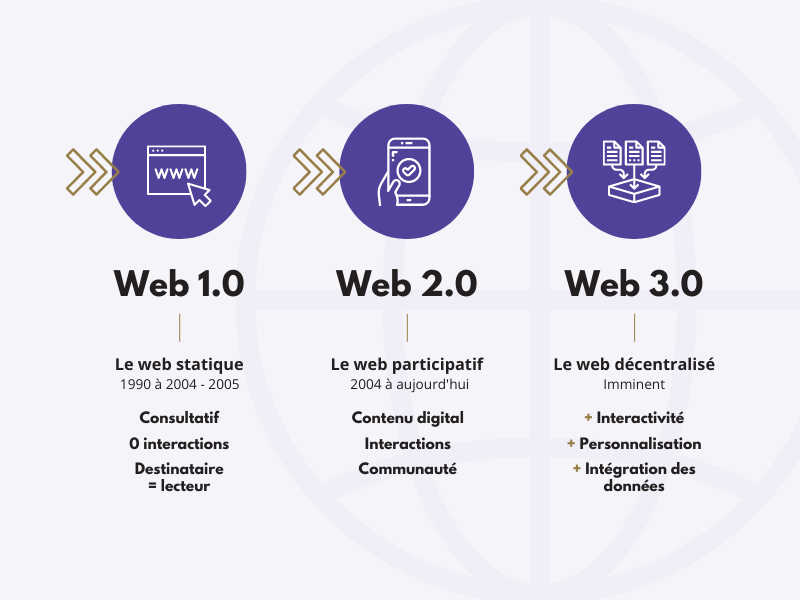

I. Le métaverse
Le 29 novembre 2021, lors d'une conférence, Mark Zuckerberg, détenteur de Facebook, Instagram et WhatsApp, fit une déclaration qui révéla au grand jour son projet de métaverse. Même si vous êtes sans doute passé à côté de cette conférence, vous avez sûrement remarqué le changement lorsque l'on ouvre l'application Messenger ou Facebook : le nouveau logo de la marque « Méta », qui fait directement référence au métaverse.
🎨 Deux approches graphiques
- Réaliste : Des projets comme New Earth ou le métaverse Méta visent à retranscrire un monde réaliste, copiant trait pour trait notre monde.
- Stylisé / Jeu vidéo : D'autres comme The Sandbox ou Decentraland adoptent une approche plus originale, se rapprochant graphiquement d'un jeu vidéo.
a) Quels intérêts ont les métaverses ?
Un métaverse présente de multiples intérêts :
🎮 Divertissement
En premier lieu, un métaverse est une place de divertissement. On peut y faire de nombreux jeux ainsi que de nombreuses activités, tout comme dans un jeu vidéo.
👥 Dimension sociale
Dans un métaverse, vous êtes en connexion directe avec les autres utilisateurs. Vous pouvez vous divertir entre amis, même s'ils sont éloignés géographiquement, en faisant tout un tas d'activités différentes : du sport, manger au restaurant, danser dans un bar ou partir en voyage.
💼 Opportunités professionnelles
Ce nouveau monde virtuel vous permettra d'avoir un emploi directement dans le métaverse :
- Propriétaire d'une boîte de nuit, d'une boutique ou d'un bar
- Guide touristique, policier, ou propriétaire immobilier
🏠 Immobilier virtuel
Le monde de l'immobilier est un des principaux axes du métaverse. Le métaverse est tout comme notre monde divisé en diverses parcelles (terrains), chaque terrain étant détenu par un propriétaire.
🤔 Pourquoi le métaverse pourrait être adopté ?
Si vous pensez que le métaverse n'a que peu de chance d'être adopté par le grand public car « qui voudrait vivre sa vie dans un monde virtuel ? », considérez ceci :
De nombreuses personnes fuient déjà le monde réel par le biais de divers réseaux sociaux, jeux vidéo ou forums en ligne. Alors pourquoi n'adopteraient-elles pas le métaverse, si celui-ci leur permet d'avoir une nouvelle vie ? Virtuelle certes, mais les exemples cités précédemment sont tout autant virtuels.

b) Des exemples de projets métaverses
Parmi les nombreux projets métaverses en cours de développement, voici quelques-uns déjà assez aboutis :
🧱 The Sandbox
- Blockchain : Ethereum
- Lancement : 2017 (projet français)
- Style graphique : Proche de Minecraft ou Roblox
- Statut : Version bêta
- Partenaires notables : Atari, Binance, Carrefour, Adidas, Nike, The Walking Dead, The Smurfs, Snoop Dogg
🌍 Decentraland
- Blockchain : Ethereum
- Particularité : Totalement décentralisé, comme son nom l'indique
- Statut : En cours de développement
🚀 Star Atlas
- Blockchain : Solana
- Ambition : La conquête spatiale
- Concept : Visiter les différentes planètes de la Voie Lactée avec des vaisseaux spatiaux achetables, améliorables et modifiables
- Économie : Les planètes sont composées de parcelles de terrain où les utilisateurs pourront créer des entreprises et habitations
II. Les différentes versions du web
Vous l'utilisez tous les jours mais pourtant, savez-vous ce qu'est le web ? La plupart des gens confondent la notion de web et celle d'internet.
TCP/IP.Le web est la partie hypertexte de l'internet : ce sont les pages des sites programmés en HTML/CSS. Le web a besoin d'interprètes pour pouvoir être lu : les navigateurs web tels que Chrome, Firefox, Safari, Edge ou Opera.
a) Le Web 1.0 (années 90)
La première version du Web, appelée Web 1.0, fait son apparition lors des années 90.
- Caractéristiques : Version plutôt basique et inesthétique, les langages de programmation étant à leurs balbutiements.
- Usage principal : Exclusivement la lecture d'informations et de contenus produits par les différents sites.
- Rôle de l'utilisateur : Consommateur passif de contenu.
b) Le Web 2.0 (années 2000 - aujourd'hui)
Le Web 2.0 n'est autre que la version du web que nous connaissons actuellement : une version améliorée du Web 1.0.
📊 Les données : la nouvelle marchandise
Toutes ces activités produisent des données. Même si la plupart des utilisateurs ne s'en inquiètent pas, ces données permettent d'accumuler une base d'informations conséquentes sur :
- Le comportement des utilisateurs
- Leurs habitudes de navigation
- Leurs interactions sociales
Ces données sont ensuite utilisées pour :
- Créer des algorithmes de pubs ciblées en fonction des habitudes et besoins de chacun
- Être revendues par les grands groupes afin que d'autres sites les utilisent pour optimiser leur visibilité
c) Le Web 3.0 : la prochaine révolution du web
Comme vu précédemment, le web a déjà connu sa révolution au cours des années 2000, changeant la place de l'utilisateur de simple lecteur de pages web à créateur de contenus.
⚖️ Le droit numérique
L'enjeu de ce nouveau système de web est la création de la notion de droit numérique. Ce droit garantira aux utilisateurs le fait que la valeur contractée par les données qu'ils produisent leur reviendra de droit. Ils pourront alors :
- Les revendre
- Les garder selon leur préférence
Web 2.0 : Lire + Créer du contenu
Web 3.0 : Lire + Créer + Posséder son contenu et ses données
De par la blockchain, toute production de contenus sera ancrée comme appartenant à son créateur.
🏢 Quel avenir pour les géants du Web 2.0 ?
C'est donc là un énorme bouleversement dans cet écosystème, puisque aujourd'hui l'écrasante majorité des sites web et applications sont totalement centralisés.
